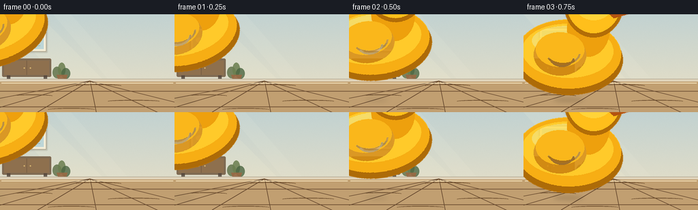
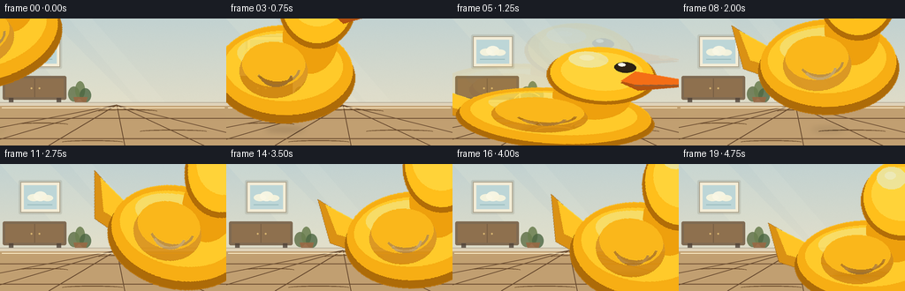

CODING AGENTS AS PIXEL WORLD MODELS
traex/GPT-5.6-Sol · mechanics_0037
点击播放 · 原生 RGB 像素
逐轮保存的候选
回放视频、检查图与代码变化。
每份候选均可单独播放。实际图片检查记录在下方工具轨迹中。
候选 01播放与检查图
点击播放 · 原生 RGB 像素


展开代码变化
--- 上一保存版本
+++ 本次保存版本
@@ -0,0 +1,225 @@
+from pathlib import Path
+import math
+
+import numpy as np
+from PIL import Image, ImageDraw, ImageFilter
+
+import artifact_io
+
+
+CASE_DIR = Path(__file__).resolve().parent
+W, H, N = 256, 144, 20
+S = 4
+RNG = np.random.default_rng(37)
+
+
+def sc(v):
+ return int(round(v * S))
+
+
+def points(seq):
+ return [(sc(x), sc(y)) for x, y in seq]
+
+
+def make_background():
+ """A softly textured, fixed camera view across a nursery floor."""
+ hh, ww = H * S, W * S
+ y = np.linspace(0, 1, hh)[:, None, None]
+ top = np.array([194, 210, 209], dtype=float)[None, None, :]
+ bottom = np.array([237, 225, 196], dtype=float)[None, None, :]
+ arr = top * (1 - y) + bottom * y
+ arr = np.repeat(arr, ww, axis=1)
+ # Very fine texture keeps the scene organic without distracting from motion.
+ noise = RNG.normal(0, 1.25, (hh, ww, 1))
+ arr = np.clip(arr + noise, 0, 255).astype(np.uint8)
+ bg = Image.fromarray(arr, "RGB")
+ d = ImageDraw.Draw(bg, "RGBA")
+
+ # Broad afternoon light across the wall.
+ d.polygon(points([(0, 0), (56, 0), (151, 96), (86, 96)]), fill=(255, 250, 219, 28))
+ d.polygon(points([(78, 0), (104, 0), (188, 96), (159, 96)]), fill=(255, 252, 231, 18))
+
+ # Framed, simple cloud print.
+ d.rounded_rectangle((sc(21), sc(18), sc(70), sc(57)), radius=sc(2), fill=(99, 91, 73, 38))
+ d.rectangle((sc(23), sc(20), sc(68), sc(55)), fill=(246, 239, 216, 245), outline=(119, 108, 85, 150), width=sc(1))
+ d.rectangle((sc(27), sc(24), sc(64), sc(51)), fill=(182, 211, 215, 225))
+ d.ellipse((sc(31), sc(34), sc(45), sc(42)), fill=(248, 244, 222, 235))
+ d.ellipse((sc(38), sc(31), sc(53), sc(42)), fill=(250, 247, 228, 240))
+ d.ellipse((sc(47), sc(35), sc(60), sc(42)), fill=(248, 244, 222, 235))
+ d.line(points([(31, 46), (59, 46)]), fill=(113, 155, 157, 120), width=sc(1))
+
+ # Low cabinet provides scale while keeping the flight path open.
+ d.rounded_rectangle((sc(3), sc(65), sc(75), sc(92)), radius=sc(2), fill=(115, 91, 66, 225))
+ d.rectangle((sc(6), sc(68), sc(72), sc(89)), fill=(143, 112, 78, 235))
+ d.line(points([(39, 68), (39, 89)]), fill=(92, 72, 54, 120), width=sc(1))
+ d.ellipse((sc(34.5), sc(78), sc(36.5), sc(80)), fill=(224, 190, 117, 220))
+ d.ellipse((sc(43.5), sc(78), sc(45.5), sc(80)), fill=(224, 190, 117, 220))
+ d.rectangle((sc(10), sc(90), sc(15), sc(99)), fill=(78, 65, 54, 210))
+ d.rectangle((sc(64), sc(90), sc(69), sc(99)), fill=(78, 65, 54, 210))
+
+ # A small plant silhouette at the back left.
+ d.ellipse((sc(77), sc(77), sc(90), sc(94)), fill=(91, 109, 68, 205))
+ d.ellipse((sc(85), sc(71), sc(96), sc(91)), fill=(106, 126, 79, 220))
+ d.ellipse((sc(90), sc(79), sc(103), sc(95)), fill=(75, 101, 65, 205))
+ d.polygon(points([(83, 89), (99, 89), (96, 99), (86, 99)]), fill=(151, 104, 67, 235))
+
+ # Baseboard and warm wooden floor.
+ d.rectangle((0, sc(95), ww, sc(99)), fill=(224, 211, 186, 255))
+ d.line(points([(0, 95), (256, 95)]), fill=(118, 112, 99, 90), width=sc(1))
+ d.rectangle((0, sc(99), ww, hh), fill=(193, 159, 113, 255))
+ # Floor gradient overlay, brighter around the action area.
+ floor = Image.new("RGBA", bg.size, (0, 0, 0, 0))
+ fd = ImageDraw.Draw(floor, "RGBA")
+ for k in range(45, 0, -1):
+ a = int(1.2 * (46 - k))
+ fd.ellipse((sc(45-k*2), sc(94-k*.18), sc(245+k*1.2), sc(154+k*.2)), fill=(255, 224, 168, max(0, 2 if a < 30 else 1)))
+ bg = Image.alpha_composite(bg.convert("RGBA"), floor)
+ d = ImageDraw.Draw(bg, "RGBA")
+ # Plank seams and restrained wood grain.
+ d.line(points([(0, 113), (256, 113)]), fill=(113, 82, 53, 58), width=sc(1))
+ d.line(points([(0, 136), (256, 136)]), fill=(108, 77, 49, 58), width=sc(1))
+ for xb in (-105, -24, 55, 141, 231, 316):
+ d.line(points([(132, 98), (xb, 144)]), fill=(105, 75, 48, 53), width=sc(1))
+ for yy, x0, x1 in [(105, 111, 178), (120, 18, 77), (128, 158, 234), (140, 70, 139)]:
+ d.arc((sc(x0), sc(yy-2), sc(x1), sc(yy+2)), 185, 355, fill=(105, 74, 43, 33), width=sc(1))
+ # A slim highlight along the floor, showing its smooth surface.
+ d.line(points([(2, 101), (254, 101)]), fill=(255, 239, 202, 80), width=sc(1))
+ return bg
+
+
+def duck_sprite():
+ """Glossy rubber duck drawn around a body-centered transform origin."""
+ size = sc(112)
+ im = Image.new("RGBA", (size, size), (0, 0, 0, 0))
+ d = ImageDraw.Draw(im, "RGBA")
+
+ # Tail behind the body.
+ d.polygon(points([(34, 51), (18, 41), (22, 57), (36, 62)]), fill=(218, 145, 20, 255), outline=(169, 106, 15, 245))
+ d.polygon(points([(32, 49), (21, 43), (25, 54), (38, 58)]), fill=(255, 197, 38, 255))
+
+ # Body outer rim and layered color give it toy-like volume.
+ d.ellipse((sc(28), sc(42), sc(84), sc(75)), fill=(173, 107, 8, 255))
+ d.ellipse((sc(29), sc(40), sc(83), sc(72)), fill=(247, 174, 20, 255))
+ d.ellipse((sc(32), sc(42), sc(79), sc(67)), fill=(255, 202, 42, 255))
+ d.ellipse((sc(37), sc(43), sc(74), sc(57)), fill=(255, 221, 81, 210))
+
+ # Neck bridge and head, kept as one continuous rubber form.
+ d.ellipse((sc(55), sc(31), sc(77), sc(57)), fill=(238, 160, 13, 255))
+ d.ellipse((sc(53), sc(16), sc(84), sc(48)), fill=(178, 109, 7, 255))
+ d.ellipse((sc(54), sc(15), sc(83), sc(46)), fill=(255, 191, 27, 255))
+ d.ellipse((sc(57), sc(18), sc(80), sc(40)), fill=(255, 211, 57, 255))
+ d.ellipse((sc(59), sc(18), sc(70), sc(27)), fill=(255, 235, 127, 175))
+
+ # Beak, with a clear dividing seam and rounded orange tip.
+ d.polygon(points([(78, 29), (97, 34), (79, 39), (74, 35)]), fill=(179, 83, 16, 255))
+ d.polygon(points([(78, 28), (98, 33), (79, 36), (74, 34)]), fill=(244, 110, 22, 255))
+ d.line(points([(78, 36), (95, 34)]), fill=(137, 64, 17, 210), width=sc(1))
+ d.ellipse((sc(91), sc(31), sc(94), sc(33)), fill=(255, 153, 45, 180))
+
+ # Wing and molded feather grooves.
+ d.ellipse((sc(38), sc(47), sc(65), sc(66)), fill=(220, 143, 10, 220))
+ d.ellipse((sc(39), sc(46), sc(64), sc(62)), fill=(250, 183, 27, 255))
+ d.arc((sc(44), sc(50), sc(62), sc(61)), 5, 150, fill=(181, 113, 7, 175), width=sc(1))
+ d.arc((sc(46), sc(53), sc(59), sc(62)), 5, 150, fill=(181, 113, 7, 125), width=sc(1))
+
+ # Eye and pinpoint reflection are essential for readability at this scale.
+ d.ellipse((sc(72), sc(23), sc(78), sc(29)), fill=(45, 34, 20, 255))
+ d.ellipse((sc(73), sc(23.5), sc(75), sc(25.5)), fill=(255, 255, 235, 245))
+ d.ellipse((sc(62), sc(20), sc(66), sc(23)), fill=(255, 244, 171, 175))
+ return im
+
+
+# Body center positions. Three descending arcs communicate an energetic, decaying bounce.
+POSITIONS = [
+ (-11, 19), (14, 26), (40, 39), (66, 58), (91, 83), (116, 110),
+ (135, 83), (153, 62), (169, 50), (182, 49), (193, 58), (202, 78), (207, 109),
+ (210, 90), (212, 81), (213, 84), (214, 96), (215, 109), (215, 107.5), (215, 108),
+]
+ANGLES = [-17, -12, -7, 1, 9, 3, -12, -8, -2, 4, 9, 12, 3, -8, -3, 3, 7, 2, 0, 0]
+SCALES = [
+ (0.72, .76), (.72, .75), (.72, .76), (.71, .79), (.71, .83), (1.00, .49),
+ (.67, .88), (.69, .81), (.71, .77), (.72, .76), (.72, .78), (.71, .83), (.91, .54),
+ (.68, .84), (.70, .78), (.71, .77), (.72, .82), (.84, .60), (.76, .68), (.75, .69),
+]
+
+
+def transformed_sprite(sprite, sx, sy, angle, alpha=255):
+ nw, nh = max(1, int(sprite.width * sx)), max(1, int(sprite.height * sy))
+ obj = sprite.resize((nw, nh), Image.Resampling.LANCZOS)
+ obj = obj.rotate(-angle, resample=Image.Resampling.BICUBIC, expand=True)
+ if alpha != 255:
+ a = obj.getchannel("A").point(lambda p: p * alpha // 255)
+ obj.putalpha(a)
+ return obj
+
+
+def add_shadow(frame, x, cy, sy):
+ floor_y = 126
+ height = max(0, floor_y - (cy + 15 * sy))
+ proximity = max(0.0, 1.0 - height / 70.0)
+ sw = 17 + 25 * proximity
+ sh = 2.0 + 3.7 * proximity
+ shadow = Image.new("RGBA", frame.size, (0, 0, 0, 0))
+ sd = ImageDraw.Draw(shadow, "RGBA")
+ sd.ellipse((sc(x-sw), sc(floor_y-sh), sc(x+sw), sc(floor_y+sh)), fill=(57, 39, 24, int(35 + 72*proximity)))
+ shadow = shadow.filter(ImageFilter.GaussianBlur(sc(2.1 + height/45)))
+ frame.alpha_composite(shadow)
+
+
+def action_marks(frame, i):
+ d = ImageDraw.Draw(frame, "RGBA")
+ # Motion streaks appear only on the fastest descents.
+ if i in (3, 4, 5, 11, 12):
+ x, y = POSITIONS[i]
+ strength = 75 if i in (4, 5, 12) else 42
+ d.arc((sc(x-49), sc(y-27), sc(x-12), sc(y+4)), 202, 316,
+ fill=(255, 244, 199, strength), width=sc(1.3))
+ d.arc((sc(x-37), sc(y-17), sc(x-8), sc(y+8)), 195, 310,
+ fill=(112, 84, 48, strength//2), width=sc(1))
+ # Contact rings sit on the floor and rapidly fade after each hit.
+ contacts = {5: (116, 105), 6: (116, 48), 12: (207, 88), 13: (207, 38), 17: (215, 66), 18: (215, 28)}
+ if i in contacts:
+ cx, a = contacts[i]
+ expansion = 0 if i in (5, 12, 17) else 9
+ d.arc((sc(cx-23-expansion), sc(122-expansion*.08), sc(cx+23+expansion), sc(133+expansion*.08)), 185, 355,
+ fill=(255, 236, 174, a), width=sc(1.4))
+ # Tiny impact ticks emphasize compression without implying a hard object.
+ if i in (5, 12, 17):
+ x = POSITIONS[i][0]
+ for dx in (-28, -20, 25, 32):
+ inner = x + dx * .70
+ outer = x + dx
+ d.line(points([(inner, 122), (outer, 116 if abs(dx) < 27 else 119)]),
+ fill=(255, 239, 177, 150), width=sc(1.2))
+
+
+def generate():
+ background = make_background()
+ sprite = duck_sprite()
+ frames = []
+ for i in range(N):
+ frame = background.copy()
+ x, y = POSITIONS[i]
+ sx, sy = SCALES[i]
+ add_shadow(frame, x, y, sy)
+ action_marks(frame, i)
+
+ # A restrained translucent trailing image adds speed at peak descent.
+ if i in (4, 5, 12) and i > 0:
+ px, py = POSITIONS[i-1]
+ trail = transformed_sprite(sprite, sx*S, sy*S, ANGLES[i], alpha=24)
+ frame.alpha_composite(trail, (int(sc(px) - trail.width/2), int(sc(py) - trail.height/2)))
+
+ obj = transformed_sprite(sprite, sx*S, sy*S, ANGLES[i])
+ frame.alpha_composite(obj, (int(sc(x) - obj.width/2), int(sc(y) - obj.height/2)))
+
+ # Downsample once for clean, consistent anti-aliasing.
+ out = frame.convert("RGB").resize((W, H), Image.Resampling.LANCZOS)
+ frames.append(np.asarray(out, dtype=np.uint8))
+ return np.stack(frames)
+
+
+if __name__ == "__main__":
+ frames = generate()
+ artifact_io.save(frames, CASE_DIR)
+ print(f"saved {frames.shape[0]} RGB frames at {frames.shape[2]}x{frames.shape[1]}")
候选 02播放与检查图
点击播放 · 原生 RGB 像素

展开代码变化
--- 上一保存版本
+++ 本次保存版本
@@ -32,7 +32,7 @@
# Very fine texture keeps the scene organic without distracting from motion.
noise = RNG.normal(0, 1.25, (hh, ww, 1))
arr = np.clip(arr + noise, 0, 255).astype(np.uint8)
- bg = Image.fromarray(arr, "RGB")
+ bg = Image.fromarray(arr)
d = ImageDraw.Draw(bg, "RGBA")
# Broad afternoon light across the wall.
@@ -131,9 +131,9 @@
# Body center positions. Three descending arcs communicate an energetic, decaying bounce.
POSITIONS = [
- (-11, 19), (14, 26), (40, 39), (66, 58), (91, 83), (116, 110),
- (135, 83), (153, 62), (169, 50), (182, 49), (193, 58), (202, 78), (207, 109),
- (210, 90), (212, 81), (213, 84), (214, 96), (215, 109), (215, 107.5), (215, 108),
+ (-11, 19), (14, 26), (40, 39), (66, 58), (91, 83), (116, 116),
+ (135, 83), (153, 62), (169, 50), (182, 49), (193, 58), (202, 78), (207, 116),
+ (210, 90), (212, 81), (213, 84), (214, 96), (215, 115), (215, 113), (215, 113),
]
ANGLES = [-17, -12, -7, 1, 9, 3, -12, -8, -2, 4, 9, 12, 3, -8, -3, 3, 7, 2, 0, 0]
SCALES = [
@@ -207,10 +207,10 @@
# A restrained translucent trailing image adds speed at peak descent.
if i in (4, 5, 12) and i > 0:
px, py = POSITIONS[i-1]
- trail = transformed_sprite(sprite, sx*S, sy*S, ANGLES[i], alpha=24)
+ trail = transformed_sprite(sprite, sx, sy, ANGLES[i], alpha=24)
frame.alpha_composite(trail, (int(sc(px) - trail.width/2), int(sc(py) - trail.height/2)))
- obj = transformed_sprite(sprite, sx*S, sy*S, ANGLES[i])
+ obj = transformed_sprite(sprite, sx, sy, ANGLES[i])
frame.alpha_composite(obj, (int(sc(x) - obj.width/2), int(sc(y) - obj.height/2)))
# Downsample once for clean, consistent anti-aliasing.
候选 03播放与检查图
可观测工具轨迹
实际执行的命令与返回图片。
命令 1exit 0
/bin/bash -lc "cat prompt.txt && printf '\\n--- RULES ---\\n' && cat GENERATION_RULES.md && printf '\\n--- SPEC ---\\n' && cat task_spec.json"
命令 2exit 1
/bin/bash -lc "find . -maxdepth 2 -type f -printf '%p\\n' | sort && printf '\\nTOOLS\\n' && command -v ffmpeg && command -v python3 && python3 - <<'PY'
try:
import cv2; print('cv2',cv2.__version__)
except Exception as e: print('no cv2',e)
try:
import PIL; print('PIL',PIL.__version__)
except Exception as e: print('no PIL',e)
try:
import numpy; print('numpy',numpy.__version__)
except Exception as e: print('no numpy',e)
PY"命令 3exit 0
/bin/bash -lc 'cat artifact_io.py'
命令 4exit 0
/bin/bash -lc "(command -v ffmpeg || true); (command -v python3 || true); python3 - <<'PY'
for m in ['cv2','PIL','numpy','imageio']:
try:
x=__import__(m); print(m,getattr(x,'__version__','ok'))
except Exception as e: print('no',m,e)
PY"命令 5exit 0
/bin/bash -lc 'python3 generate.py'
命令 6exit 0
/bin/bash -lc "python3 generate.py && python3 - <<'PY'
from PIL import Image
import numpy as np
# report salient frame differences and visible non-background bounds using frame/background differencing
ims=[np.asarray(Image.open(f'frames/{i:02d}.png').convert('RGB')) for i in range(20)]
print('mean consecutive pixel deltas:', [round(float(np.abs(ims[i].astype(int)-ims[i-1]).mean()),1) for i in range(1,20)])
for i in [0,3,5,6,9,12,13,17,19]:
print(i, ims[i].mean(axis=(0,1)).round(1).tolist())
PY
ls -lh pixels.npz index.html inspection.png transition_check.png frames/00.png frames/19.png"命令 7exit 0
/bin/bash -lc "python3 - <<'PY'
from PIL import Image
import numpy as np
for i in range(20):
a=np.array(Image.open(f'frames/{i:02d}.png'))
# saturated yellow/orange unique to duck
m=(a[:,:,0]>210)&(a[:,:,1]>90)&(a[:,:,1]<230)&(a[:,:,2]<100)&((a[:,:,0]-a[:,:,2])>130)
ys,xs=np.where(m)
print(f'{i:02}: yellow px={len(xs):4d}, centroid=({xs.mean() if len(xs) else -1:5.1f},{ys.mean() if len(ys) else -1:5.1f}), bounds={((xs.min(),ys.min(),xs.max(),ys.max()) if len(xs) else None)}')
PY"保存候选 3 份；完成命令 7 次；可验证图片返回 0 张。原始 API 响应与完整日志保留在本地。